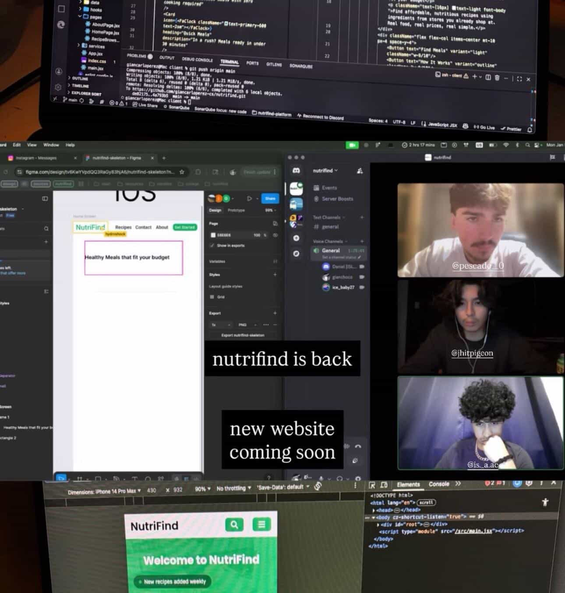

Take Action Project - NutriFind

NutriFind is a non-profit community organization dedicated to bringing about health to impoverished areas or individuals experiencing financial instability. It is our mission to make eating healthy as informative and affordable as possible; promoting the short-term and long term benefits that come with it. I was the lead programmer on the team that built the NutriFind website, which serves as a resource hub for people to learn about nutrition and find affordable healthy food options in their area. This project was a great opportunity for me to apply my programming skills to a real world problem and make a positive impact on my community. I learned a lot about web developement, including new libraries and frameworks such as React and Tailwind CSS. I also gained experience working on a team and collaborating with others to achieve a common goal. What I did well when starting this project was getting all of my ideas out. Something that I wish I did better was managing my time more effectively, as I found myself rushing to finish the project towards the end. Overall, this project was a valuable learning experience and I'm excited to keep working on it in order to make it the best it can be.
NutriFind allowed me to take action by directly contributing to a project that benefits the community. I investigated the world by researching nutritional needs and affordable food options for underserved populations. I communicated ideas by presenting my findings and solutions through the website, making information accessible and engaging for users. I also collaborated with a team, which helped me develop my communication and teamwork skills. This project has inspired me to continue using my programming skills to make a positive impact on the world and has shown me the power of technology in addressing social issues.
Schoolwide Learner Outcomes addressed
- Take Action
- Investigate the World
- Communicate Ideas